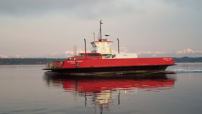

FERRY SCHEDULE
Printable Schedule, Access Policy, and Loading Procedures (8 X 11) (8.5 X 14)
Ferry Cell Phone
Ferry Low-Tide Cancellations, Summer 2015
~ COMPOSITE SCHEDULE ~


crossing time: 7 to 10 minutes
Notes: Herron Island is a private island. You must have a valid guest pass to board the ferry.
If you are looking for property, your real estate agent will provide access to the island for you,
or if you are interested in a for-sale-by-owner property,
the owner can provide you with a guest pass.